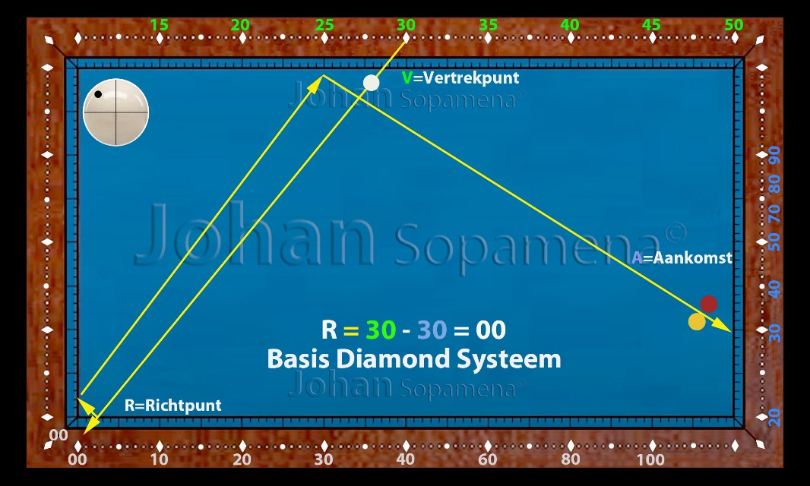
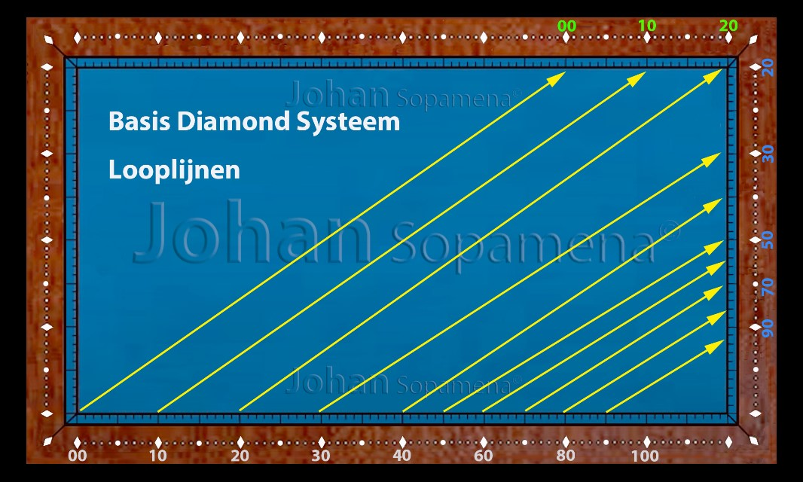
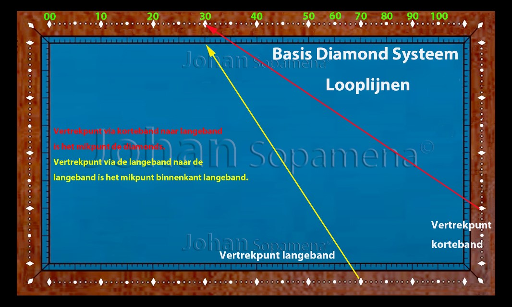

Hoofdstuk 1 — Basis Diamond Systeem
1.1 Inleiding
Het Basis Diamond Systeem is één van de meest gebruikte en meest betrouwbare systemen in het driebandenspel. In ongeveer 30% van alle voorkomende stootbeelden kan dit systeem direct worden toegepast. Het is daarmee een onmisbaar fundament voor iedere speler die systematisch wil leren rekenen in driebanden.
Dit hoofdstuk legt helder uit:
- Hoe het systeem werkt
- Wat de basisformule is
- Wanneer het systeem wel werkt
- Wanneer het systeem niet werkt
- Hoe je de referentiepunten correct leert gebruiken
1.2 De Basisformule
De kern van het systeem is verrassend eenvoudig:
➤ Richtpunt = Vertrekpunt – Aankomstpunt
Deze formule gebruik je voor alle stoten waarbij:
- Je via de lange band speelt
- De route daarna naar de korte band loopt
- Het vertrekpunt numeriek hoger is dan het aankomstpunt
Het systeem werkt alleen als deze voorwaarden kloppen.
1.3 Diamonds en Referentiepunten
Om met het Basis Diamond Systeem te werken, moet de speler vertrouwd worden met drie waarden:
- Vertrekpunt (V) — waarde van de speelbalpositie
- Richtpunt (R) — diamond waarop je moet mikken
- Aankomstpunt (A) — plaats waar de bal op de derde band moet arriveren
1.4 Uitgebreide Uitleg van het Basis Diamond Systeem
Dit systeem wordt als het universele systeem voor het driebandenspel beschouwd. Het is niet ongewoon dat tijdens een partij meer dan 30% van de stootbeelden in aanmerking komen voor deze techniek. De voorbeelden hieronder zijn slechts een kleine greep uit patronen die voor deze methode in aanmerking komen.
Basis systeem figuur 01.
Figuur 01: Basis Diamond Systeem
 Figuur 01: Basis Diamond Systeem
Figuur 01: Basis Diamond Systeem
De Basisformule
Deze formule moet je leren en vormt de kern van het systeem:
Richtpunt = Vertrekpunt – Aankomstpunt
Het onthouden van de tellingen voor de verschillende referentiepunten — vertrekpunt (V), richtpunt (R) en aankomstpunt (A) — kost wat meer tijd. De waarden van die punten zijn voor elke band verschillend en niet regelmatig verdeeld.
Beperking van de Geldigheid
Deze methode is geldig voor alle stoten via de lange band naar de korte band, waarvan de waarde van het vertrekpunt groter is dan de waarde van het aankomstpunt. Bij het onderstaande schema is goed te zien dat het systeem hier niet geldig is.
Het vertrekpunt ligt op 30 en het aankomstpunt op 50. Het maximale bereikbare punt is 30 als op het punt 0 gemikt wordt.
Basis systeem figuur 02.
Figuur 02: Situatie waarin het systeem niet geldig is
 Figuur 02: Systeem niet geldigDe Eerste Stap: Bepaling van het Aankomstpunt
Het is noodzakelijk de looplijnen, zoals op het onderstaande figuur aangegeven, uit het hoofd te kennen. De waardepunten zijn tegenover de merktekens op de band aangegeven.
Opgelet: vanaf het aankomstpunt met de waarde 40 aan de lange band (3e band), is de afstand tussen twee merktekens tot de waarde 90 gelijk aan 20 punten.
Basis diamond systeem looplijnen figuur 03.
Figuur 03: Looplijnen van het Basis Diamond Systeem
 Figuur 03: Looplijnen van het Basis Diamond SysteemBasis Telling Vertrekpunt Korte Band en Lange Band
Basis diamond systeem figuur 04.
Figuur 04: Vertrekpunt tellingen korte & lange band
 Figuur 04: Vertrekpunt tellingen korte en lange bandOpmerking: Als het vertrekpunt aan de korte band de waarde 50 of meer heeft, moet er op het merkteken gemikt worden — dus niet op het punt tegenover het merkteken. Als er vanaf de lange band gespeeld wordt, met een waarde minder dan 50, wordt op het punt gemikt dat tegenover het merkteken ligt.
Bij de twee stootbeelden op bovenstaande afbeelding wordt in beide gevallen op 20 gemikt.